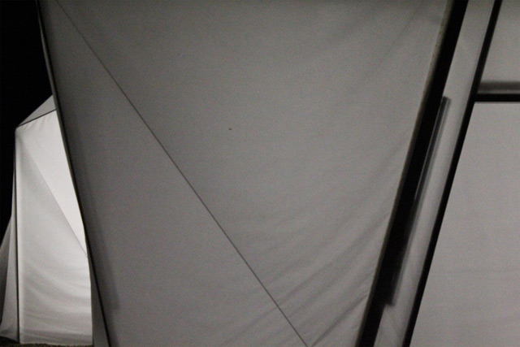

Light and Sound Pavilion
Oskar Sala 100th anniversary
The Light and Sound Pavilion is a projekt by Jan Sieber, Moritz Schell, Frederic Seybicke, Adriana Cabrera and Johannes Lerdon exposed in july 2011 at the Bauhaus Summaery 2011 in Weimar. Visitors inside the pavilion are able to control the light and sound installation with the movement of their body. Using the kinect camera as a tracking system, the incoming data is translated (kinect - pure data - doepfer dark energy) into voltage control, influencing multiple analog synthesizers and the 40 neons.
LICHT-UND KLANG IM MEDIEN PAVILLON
This pavilion was designed in commemoration of the 100th anniversary of the pioneer of electronic music, Oskar Sala, led by Professor Dr.-Ing. Sabine Zierold in collaboration with the Faculty of Architecture and the Faculty of Media at the Bauhaus-Universität Weimar. Students of the Chair of Interface Design and the course of MediaArchitecture will approach her life's work and present the results in texts, images, films, projections and sound instruments in a traveling exhibition.
In the evening, the controlled light supports the effect of the rhythmized modular structure with its translucent shell, transforming it into a walkable sound sculpture. The expressive shape of the
Pavilion is a spatial architectural interpretation of Oskar Sala's musical scores. Three interior areas that merge into one another divide the exhibition into three stations: The thematic overview, the practical application and the interpretation of Oskar Sala's work.
